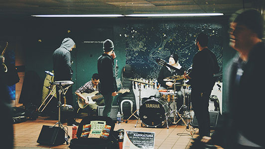

社团筛选
- 全部
请开始你的表演
-
 中南民族大学野狼长跑队 中南民族大学管理学院长跑队是一个光荣的大家庭，于2002年建队开始，每年的成绩都很优秀，一直是管理学院的骄傲。2004年长跑队开始驶向正规化，由鲁光平担任第一届队长，野狼战队也初具雏形。就此开启了野狼战队的辉煌的序幕
中南民族大学野狼长跑队 中南民族大学管理学院长跑队是一个光荣的大家庭，于2002年建队开始，每年的成绩都很优秀，一直是管理学院的骄傲。2004年长跑队开始驶向正规化，由鲁光平担任第一届队长，野狼战队也初具雏形。就此开启了野狼战队的辉煌的序幕 -
中南民族大学武术协会 中南民族大学武术协会成立于1984年，由胡文雄副教授任主教练，是校体育类优秀学生社团。协会致力于为广大学生，特别是其中的武术爱好者提供学习武术的机会。使学员们能通过传统武术的训练，具有蓬勃向上的精神面貌、强健的体魄与坚强的意志

-
中南民族大学自行车协会 中南民族大学自行车协会成立于2007年9月10日，直属中南民族大学校团委。协会成立至今车协人一直秉承“行万里路，读万卷书”的宗旨和遵循“团结，向上，互助”的团队思想。功崇惟志，业广惟勤，车协人一直兢兢业业的奋斗着，扎根民大，走向社会，成就自我

-
 中南民族大学子衿阅读社 中南民族大学子衿阅读社成立于2009年9月8日，是由中南民族大学在籍学生因为热爱读书，愿意与人分享、与人交流，想要在某些时刻共同忆起当时阅读的心中的感受，自愿组成的群众性团体
中南民族大学子衿阅读社 中南民族大学子衿阅读社成立于2009年9月8日，是由中南民族大学在籍学生因为热爱读书，愿意与人分享、与人交流，想要在某些时刻共同忆起当时阅读的心中的感受，自愿组成的群众性团体
-
中南民族大学“舞生”舞蹈团 鞋尖的尘里，有旋律狂妄的堆积。镜里的我淋漓大汗，镜外的我盈盈笑意。我们是舞生，我们为舞而生。

-
 中南民族大学摄影协会 中南民族大学摄影协会成立于公元2006年10月8日。由党委的魏大江老师发起，首届民大摄影展获奖人 员为主体，成为学生摄影协会的前身。而创立至今，已有会员数百人，占据了民大高水平摄影人员的极大部分
中南民族大学摄影协会 中南民族大学摄影协会成立于公元2006年10月8日。由党委的魏大江老师发起，首届民大摄影展获奖人 员为主体，成为学生摄影协会的前身。而创立至今，已有会员数百人，占据了民大高水平摄影人员的极大部分
-
 中南民族大学影翼轮滑协会 影翼轮滑成立于2006年夏，是整个中南民族大学轮滑和滑板爱好者交流的平台。社团成立旨在推广普及轮滑运动，交流轮滑技术，弘扬轮滑精神，培养运动人才
中南民族大学影翼轮滑协会 影翼轮滑成立于2006年夏，是整个中南民族大学轮滑和滑板爱好者交流的平台。社团成立旨在推广普及轮滑运动，交流轮滑技术，弘扬轮滑精神，培养运动人才
-
 中南民族大学足球协会 中南民族大学足球协会成立于2006年，由各年级足球爱好者组成，通过承办（主办 协办 ）足球赛事，宣传足球运动，增进同学之间友谊，促进校足球文化的发展，丰富文体生活！
中南民族大学足球协会 中南民族大学足球协会成立于2006年，由各年级足球爱好者组成，通过承办（主办 协办 ）足球赛事，宣传足球运动，增进同学之间友谊，促进校足球文化的发展，丰富文体生活！
-
 中南民族大学篮球协会 篮球协会，成立于2008年，协会每年负责组织主办或承办校内各大篮球赛事，致力于民大篮球水平的提高。
中南民族大学篮球协会 篮球协会，成立于2008年，协会每年负责组织主办或承办校内各大篮球赛事，致力于民大篮球水平的提高。 -
 中南民族大学乒乓球协会 协会于1988年由一群热爱乒乓球运动的年轻人共同发起创立，以营造良好校园体育文化氛围为己任，秉持着“发扬国球精神，致力民大运动”的信念，丰富广大师生的课余文化生活，为广大乒乓球爱好者提供一个娱乐、训练、锻炼和发展的平台
中南民族大学乒乓球协会 协会于1988年由一群热爱乒乓球运动的年轻人共同发起创立，以营造良好校园体育文化氛围为己任，秉持着“发扬国球精神，致力民大运动”的信念，丰富广大师生的课余文化生活，为广大乒乓球爱好者提供一个娱乐、训练、锻炼和发展的平台 -
 中南民族大学军事爱好者协会 军事爱好者协会在校人民武装部的指导下，在我校退役大学生士兵的支持下，于2016年4月正式成立。协会以“普及国防教育，提升国防素质，弘扬民族精神”为宗旨，致力于为全校师生普及国防知识，增强师生的国防观念；同时汇集全校的军事爱好者，打造校园军事平台
中南民族大学军事爱好者协会 军事爱好者协会在校人民武装部的指导下，在我校退役大学生士兵的支持下，于2016年4月正式成立。协会以“普及国防教育，提升国防素质，弘扬民族精神”为宗旨，致力于为全校师生普及国防知识，增强师生的国防观念；同时汇集全校的军事爱好者，打造校园军事平台
-
 中南民族大学辩论协会 中南民族大学辩论协会是一个新成立的学校辩论社团组织，成立于2006年9月。是一个新成立的学校辩论社团组织，为广大辩论爱好者提供练习平台
中南民族大学辩论协会 中南民族大学辩论协会是一个新成立的学校辩论社团组织，成立于2006年9月。是一个新成立的学校辩论社团组织，为广大辩论爱好者提供练习平台 -
中南民族大学烹饪协会 烹饪协会成立于2014年9月份，为人文类社团之一。现有社员36人，指导老师2人，辅导老师6人。这是一个介绍美食、让大家学习制作美食和品尝美食的社团。每次活动中，我们都会教授大家一种菜肴的烹饪方法，有冷盘热菜，还有甜羹咸汤，有中式菜肴当然还有西式大餐

-
 中南民族大学网球协会 中南民族大学网球协会成立于2002年，是经共青团中南民族大学委员会批准成立，受中南民族大学学生团体联合会直接管理的学生社团，是一个朝气蓬勃、独具特色的学生团体
中南民族大学网球协会 中南民族大学网球协会成立于2002年，是经共青团中南民族大学委员会批准成立，受中南民族大学学生团体联合会直接管理的学生社团，是一个朝气蓬勃、独具特色的学生团体
-
中南民族大学天乐合唱团 碰撞与融合，琢磨与玩味，用耳朵去听、去调整、去体会总有一个音符会拨动你的心

-
 中南民族大学计算机协会 中南民族大学计算机协会成立于1990年，是由中南民族大学在籍学生为能进行学术交流、推广电脑知识自愿组成的群众性团体
中南民族大学计算机协会 中南民族大学计算机协会成立于1990年，是由中南民族大学在籍学生为能进行学术交流、推广电脑知识自愿组成的群众性团体 -
中南民族大学笛萧协会 音乐之美来源于奏者之心，亦来源于听者内心的共鸣，每静心欣赏一首曲子就能感受到一个前所未见的奇妙音乐世界，那么换一个角度看世界是否也能如音乐一样得到一个前所未有的缤纷美丽的世界……
-
中南民族大学游泳协会 中南民族大学游泳协会通过组织广大冬泳爱好者和游泳爱好者开展多种形式的全校健身游泳（冬泳）活动，使我校越来越多的爱好者纷纷加入到全民健身游泳活动的行列。在体育部门的领导下，充分发挥了协会的桥梁和纽带作用，承办了各项多种形式的全民健身的体育活动

-
中南民族大学棒球协会 中南民族大学棒球协会是由棒球运动爱好者经过长期的努力，在大学生委员会的指导和帮助下，经批准，于2017年6月正式成立
-
 中南民族大学瑜伽健身协会 中南民族大学瑜伽&健身协会成立于2015年4月，协会面向全校瑜伽、健身爱好者招新，并且每年有相关瑜伽和健身公益性活动
中南民族大学瑜伽健身协会 中南民族大学瑜伽&健身协会成立于2015年4月，协会面向全校瑜伽、健身爱好者招新，并且每年有相关瑜伽和健身公益性活动